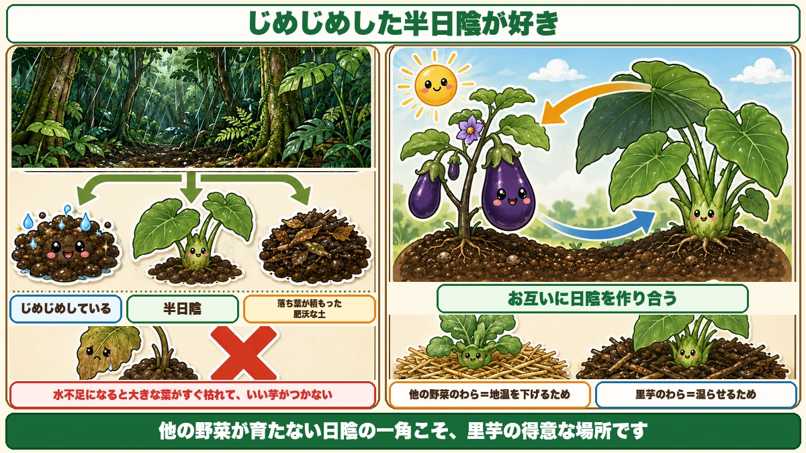
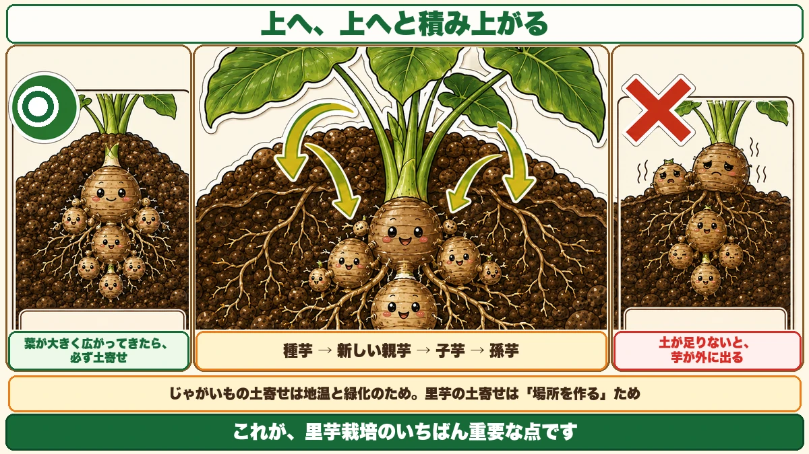
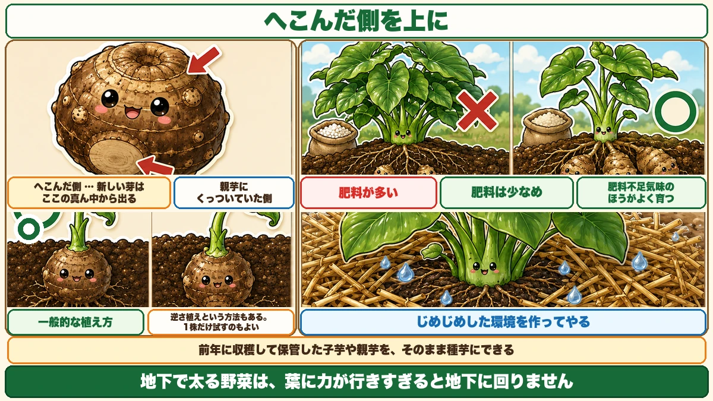

The corms form above the one you planted 🍠 So they come out of the ground
🍠 "Huge leaves and tiny corms."
🍠 "I dug them and they were sticking out of the soil."
🍠 "I gave it the sunniest spot and it still didn't work."
Hello, I'm Eiko. Eight years of growing vegetables organically and without pesticides, and a teaching licence in science.
Taro wants the opposite of what everything else wants.
The point, up front:
The corms form above the one you planted.
So unless you draw soil up to them, they end up out in the open ☺️
Start with the position

What this diagram says （図解の文字）
- It likes damp part shade
- Damp ／ part shade ／ rich soil built from fallen leaves
- × short of water, the big leaves die quickly and the corms don't form
- They shade each other
- Straw for other crops lowers soil temperature; straw for taro keeps it damp
- The shaded corner where nothing else grows is exactly taro's place
There are said to be over 200 varieties in Japan alone. If you're choosing, Dodare is the standard — easy and widely available.
It wants damp part shade
Taro likes a damp, partly shaded spot. Genuinely likes it.
And the reverse is just as definite: short of water, those big leaves die back quickly, and you get no decent corms.
Because of where it comes from
Taro comes from the wet tropical forests of Southeast Asia. Think what that is:
- a great deal of rain
- trees overhead, so the floor is in part shade
- leaf litter building rich, damp soil
Recreate roughly that and it's an easy crop.
Pairing it with aubergines
A pleasing combination: taro and aubergines come from similar places, but taro wants less sun than an aubergine does.
So:
- aubergines on the sunny side
- taro on the shaded side
and the aubergines shade the taro. Better still, aubergines don't object to part shade either, so you can equally grow them in the shade of taro's enormous leaves.
They shade each other. Companion planting isn't only about what happens underground.
Mulch it to keep it damp
Pack cut grass or straw around the plants. Keep it damp and it grows remarkably well.
Same material as elsewhere, different purpose: for other crops, straw lowers soil temperature. For taro, it keeps the soil wet. What a job is for changes what it means.
Feed it lightly
Plenty of fertiliser gives you enormous leaves — impressive, and no corms to speak of.
Stated plainly: it does better slightly underfed.
Same as sweet potatoes running to vine, same as onions not bulbing under too much nitrogen. Everything that swells underground behaves this way: put the energy into leaves and it doesn't go below.
The corms stack upward

What this diagram says （図解の文字）
- Upward, and upward
- ○ once the leaves spread out, earth up without fail
- Seed corm → new parent corm → daughter corms → granddaughter corms
- × with too little soil, the corms come out into the open
- Earthing up potatoes is about temperature and greening. Earthing up taro is about making room
- This is the single most important point in growing taro
- The seed corm shoots and the shoot extends
- It emerges and opens its leaves
- The leaves build reserves, which form a new parent corm above the seed corm
- Daughter and granddaughter corms form beside the parent
Step 3 is the one that matters
The new parent corm forms above the seed corm.
Potatoes spread out around the seed. Taro stacks upward, with daughters and granddaughters beside each level.
So you earth up
And that creates the problem: stacking upward, they run out of soil and emerge into the open, where light damages them.
This is the single most important point in growing taro.
When
Once several leaves have spread out, earth up — without fail.
The purpose is specific: making somewhere for the corms to grow.
Earthing up potatoes was about soil temperature and preventing greening. Earthing up taro is about making room. The same job for a different reason.
And more than once
One pass isn't enough. Every time the leaves spread further, draw more soil up. The corms rise as they grow, and the soil has to rise with them.
Seed corms

What this diagram says （図解の文字）
- The hollow side goes up
- Hollow side — the new shoot comes from the middle of it ／ the side that was attached to the parent corm
- × plenty of fertiliser ／ ○ feed lightly — it does better slightly underfed
- ○ the usual way to plant it
- There's also upside-down planting. Trying one plant is a reasonable approach
- Make a damp environment for it
Daughter or parent corms you saved from last year's crop can be used as seed. The same corms you'd eat — nothing special needs buying. (Potatoes are a different case, where certified seed matters.)
There's a right way up
Look at a corm and there are two distinct faces:
- a hollow side
- the side that was attached to the parent
The new shoot comes out of the middle of the hollow side, so that side goes up. That's the standard method.
Where taro belongs
A practical note to end on. Every garden has a corner that doesn't get the light — shaded by a building, under a tree, facing north.
Useless for most vegetables. And ideal for taro.
The spot where nothing else grows is the spot taro is good at. As a way of using space, it works very well.
To sum up
- ✅ Taro likes damp part shade — the opposite of most crops
- ✅ Short of water, the leaves die and the corms don't form
- ✅ It comes from wet tropical forest: rain, shade, leaf-litter soil
- ✅ Pair it with aubergines so they shade each other
- ✅ Straw here is for damp, not for cooling
- ✅ Feed lightly; it does better slightly underfed
- ✅ The corms form above the seed corm and stack upward
- ✅ Without enough soil they emerge and are damaged by light
- ✅ Earth up once the leaves spread — and again each time they spread further
- ✅ Earthing up taro is about making room, not temperature
- ✅ Saved corms work as seed
- ✅ Hollow side up — the shoot comes from its centre
- ✅ The shaded corner is taro's place
You don't have to do all of it. Think of the shadiest corner of your garden. That's where the taro goes next year 🍠
Thank you for reading!